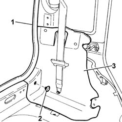

7040B06 side trim (one) lh or rh, load compartment/load platform - r r
- Path
- Procedures > 70 FITTINGS > 7040 BODYSHELL INTERIOR TRIMS AND FITTINGS > 7040B luggage compartment and load platform trims > 7040B06 side trim (one) lh or rh, load compartment/load platform - r r
- Kind
- repair procedure (removal / refitting; the operation number is the code)
- Applies to
- all engines; all production periods
- Interactive page
- https://sloeber94.github.io/elrnDB-fPnd/en/#/2753195
Applies to: all engines; all production periods
 Removing
Removing
 Refitting
Refitting7040B10 load platform (luggage platform) trim - r+r
7050A20 one-piece rear seat cushion - r r
7040H66 LEFT REAR SIDE TRIM, WITH REAR PARCEL SHELF SUPPORT - R.R .
1. Release the tailgate housing seal as necessary to be able to release the luggage compartment (load carrying compartment) side trim.
2. Remove the fixing button using the special tool.
 | Name | Country |
|---|---|---|
- | Scraper blade | 1.878.077.000 |
3. Release the luggage compartment (load carrying compartment) side trim and remove it.

Applies to: all engines; all production periods
Refitting
RemovingCheck the condition of the luggage compartment (load carrying compartment) side trim and, if necessary, replace it.
Position the luggage compartment (load carrying compartment) side trim and secure it to the tailgate rear trim using the special fixing button.
Fit the tailgate housing seal.
7040H66 LEFT REAR SIDE TRIM, WITH REAR PARCEL SHELF SUPPORT - R.R .
7050A20 one-piece rear seat cushion - r r
Topics linked from this page (6)
- 7040B10 load platform (luggage platform) trim - r+r
- 7040H50 rear panel - r r
- 7040H66 LEFT REAR SIDE TRIM, WITH REAR PARCEL SHELF SUPPORT - R.R .
- 7040H80 parcel rack
- 7050A19 rear seat squab - r r
- 7050A20 one-piece rear seat cushion - r r